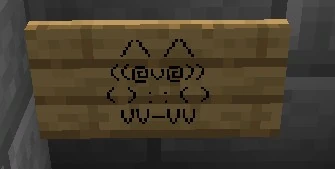

Owls on Signs
Owls drawn with text characters appear on hidden signs throughout v11. The recurring motif is associated with secrets and points of interest.
A recurring design
The owls are among the most frequently recurring visual secrets in v11: ASCII-art drawings inscribed on signs and hidden in different parts of the map. The motif is associated with a secret or hidden point of interest. Other animals made from characters, described as cats or dogs, also exist but are much rarer.



Appearance and variants
The design is presented as a four-line figure, with ears formed by /\ /\, eyes and beak in ((@v@)), a body using punctuation and feet in VV-VV. The available abbreviated transcription omits a body line, and the inventoried signs include variants, so this description should not be treated as a single reproduction of every sign.
Some variants change the beak to (( ^v^ )); others use L : : L or a backtick followed by : : ( in the body. The repeated motif led to the theory that it might be a particular builder's signature. Some owls are also suggested to indicate loot chests, but no universal rule for their use is confirmed.
Spoiler warningReveal spoiler
Eleven known locations
The available survey lists eleven signs in v11. This count refers to the listed locations and does not establish that these are all the owls on the map.
| Coordinates (X, Y, Z) | Design |
|---|---|
| (-454 68 1654) | Standard owl |
| (-422 63 1711) | Standard owl |
| (-338 70 1704) | Variant with a different beak: (( ^v^ )) |
| (-215 65 1702) | Standard owl |
| (-41 68 1702) | Variant with body L : : L |
| (-135 68 1717) | Standard owl |
| (-426 66 1735) | Standard owl |
| (-185 77 1728) | Variant with body ` : : ( |
| (-176 70 1774) | Standard owl |
| (-551 73 1595) | Standard owl |
| (-784 66 2308) | Standard owl |
See also
Sources and references
- v11.4.4 maps, signs, books and items World records
Text adapted and expanded from The Owl /\ /\ ((@v@)) ( ) : : ( ) VV-VV (contributors and history, revision 4856). Adapted text is available under CC BY-SA 3.0.